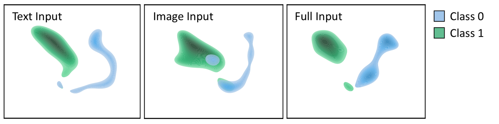

Models look strong on clean benchmarks and fail on messy inputs. I work on closing that gap, both in how models are built and in how we measure them.

Robult keeps classes separable with text only, image only, or both.
2022 – now · IJCAI 2025 · ACCV 2026
Robust multimodal learning with missing modalities
Real systems lose sensors, skip scans and see partial records. Robult pairs a soft positive-unlabeled contrastive loss with latent reconstruction, so a model keeps task-relevant and modality-specific information. It stays accurate when modalities are missing or labels are scarce, and it plugs into existing architectures. SURE brings scalable uncertainty estimation to pretrained multimodal models under the same missing-modality conditions, so a prediction comes with a measure of how far to trust it.
Medical VLMs score well on curated benchmarks, but deployment brings blurred images, partial evidence and ambiguous questions. I build perturbation benchmarks across corruption types and severities, and I check through a clinician annotation study that the synthetic corruptions match what appears in practice. I then study calibration, correctness prediction and shortcut signals. A model should be able to choose between answering, asking a clarifying question and abstaining. First results appeared at an ICML 2026 workshop, and the full study, When Should Medical VLMs Answer?, is under review.
Troupe scales multi-identity personalization from a few people to crowds of 20, each rendered from one reference photo. The premise is that identities fade as groups grow because the added identity branch interferes with the pretrained model's ability to compose groups. Troupe keeps conditioning local on a frozen few-step backbone: each person gets eight private tokens, and a star-shaped attention mask confines them to that person's face region. Since every face can serve as its own reference, Troupe trains on ordinary photos, with mosaics supplying the small faces crowds need. On CrowdScale, a new 2-to-20-person benchmark, it reaches the highest average identity similarity of every method tested, closed models included. For 20 people it uses about 37% of the FLOPs per image of the strongest open baseline.
At Cantina Labs I distill in-house image and video diffusion models into faster samplers that keep their quality, and I work on identity-preserving generation.
MiniELM's online loop: simulated user feedback becomes an RL reward.
2024 – 2025 · ACL Findings 2025
Small, adaptive LLMs for search
MiniELM distills a large language model into a lightweight query-rewriting model offline, then refines it online with reinforcement learning. In the online stage, LLM-generated feedback replaces human labels. The result is a rewriter cheap enough for real-time e-commerce search that keeps adapting to new queries, evaluated on Amazon ESCI.
CoInception (ICDM 2024) is a noise-aware self-supervised time-series encoder. It ranks first on over two-thirds of UCR classification datasets with 40% of the parameters of the runner-up. Other work includes graph-assisted multi-pill detection (PLOS ONE 2023, +9.4% COCO mAP over Faster R-CNN), and a single calibration model for many low-cost air sensors that was integrated into an air-quality monitoring system in Hanoi (EAAI 2024). It also includes ensemble forecasting for river discharge and water level (Scientific Reports 2022, EAAI 2023).
The first principle is that you must not fool yourself, and you are the easiest person to fool.
Richard Feynman, physicist
Work with me
I'm looking for Summer 2027 research internships in multimodal learning, generative models and trustworthy AI. I'm also happy to talk about collaborations.